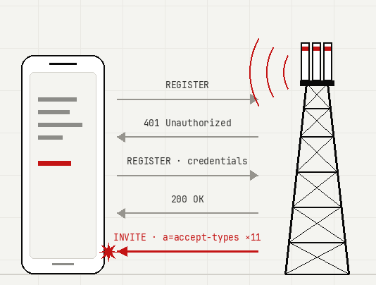

Systems security, from baseband up
Long-form notes on modem firmware and telecom networks, and later on machine-learning security. Evidence first: every address comes from an image that was actually loaded.
-
14 Oct 2026


Nine of Ten
Three defences in a RAG poisoning lab, measured against the lab's own payloads: a keyword filter that rejects nine of ten clean documents, a perplexity score that cannot separate clean from poisoned, and a similarity check that works and is never imported.
-
12 Aug 2026


The Eleventh Slot
An IMS SDP heap overflow in Exynos modem firmware: locating the parser, reconstructing the dispatch chain, and reproducing the overflow from the real IMS entry point under full-system emulation.
About
Breakpoint is a working notebook, not a news site. Posts are long, they show the evidence rather than the conclusion, and they say plainly where the work stops. When something here is wrong, the correction goes inline rather than into a quiet edit.
Amit Vitekar writes about baseband firmware and telecom security. The material starts with memory-safety defects in modem protocol stacks, and moves toward machine-learning security as that work develops.